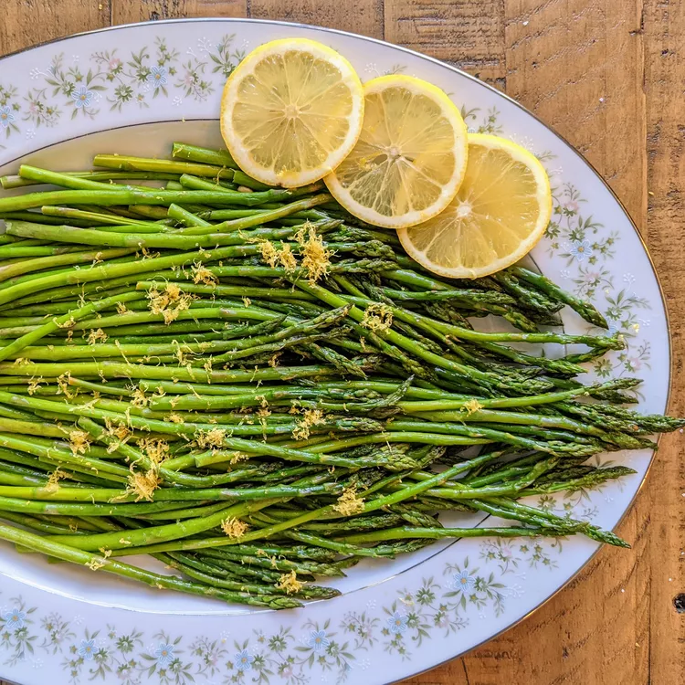

Description
Roasted aspargus seasoned with garlic, lemon, and Parmesan cheese. This recipe is super quick to prep and roasting removes any bitterness. Try it next to lamb or grilled fish.
Ingredients
- 1 bunch thin aspargus spears, trimmed
- 3 tablespoons olive oil
- 1½ tablespoons grated parmesan cheese (optional)
- 1 clove garlic,minced (optional)
- 1 teaspoon sea salt
- ½ teaspoon ground black pepper
- 1 tablespoon lemon juice (optional)
Directions
- Preheat oven to 425 degrees F (220 degrees C).
- Place asparagus into a mixing bowl; drizzle with olive oil and toss to coat.
- Sprinkle with parmesan cheese, garlic, salt, and pepper.
- Arrange asparagus in a single layer in a baking dish.
- Bake in preheated oven until just tender, 12 to 15 minutes depending on thickness.
- Sprinkle with lemon juice just before serving.